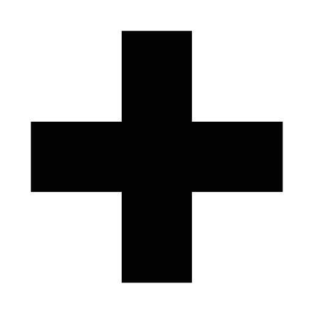

diagrammok az operációs rendszerekről, telefonokról és az intenet használatáról a VPG-ben
Az adatokat 2013 jan 7-9 között rögzítettük, ~60 VPG-s tanuló megkérdezésével.
készítette: /rontap/ grafikonok:/GoogleCharts/
Köszönöm az összes Válaszolónak és megketintőnek!
2013/2014-es tanévben is sor kerül egy ilyen kérdőívre, csak nagyobb pontossággal
További infóért kattints ide
A kérdések (zárojelben azok, amiknél csak 40 megkérdezett volt):
(Mennyi youtube videót nézel hetente?)
Milyen email címed van?
Milyen Operációs rendszert használsz?
Milyen böngészőt használsz?
Milyen telefonod van? [cég/oprendszer]
(mennyit gépezel hetente össz)
(milyen játékokkal játszass).
---
A használattal elfogadod a ÁSZF-et amelyet jogunkban áll bármikor megváltoztatni
A helyesírási hibákért felelősséget nem vállalunk.
készítette: rontap emailcím: rontap@rontap.netne.net
Ugrás:
OPerációs rendszer
Email szolgáltató
Telefon OP.rendszer
Telefongyártók
Játékok
Youtube megtekintések
azok a játékok, amelyekre 2-nél kevesebben szavaztek, "más kategóriába kerültek"